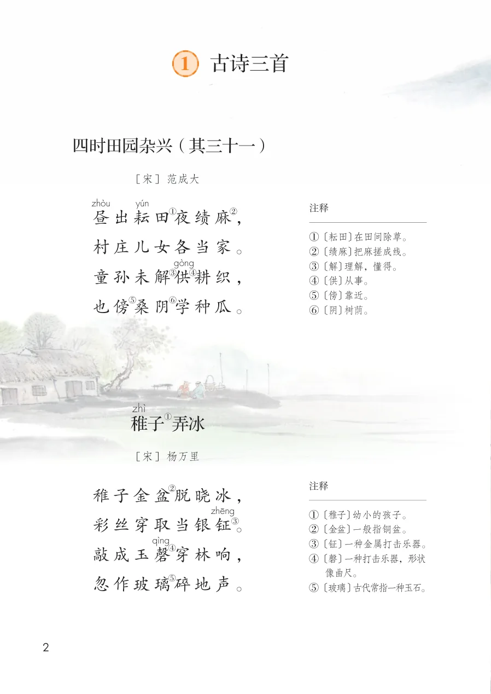
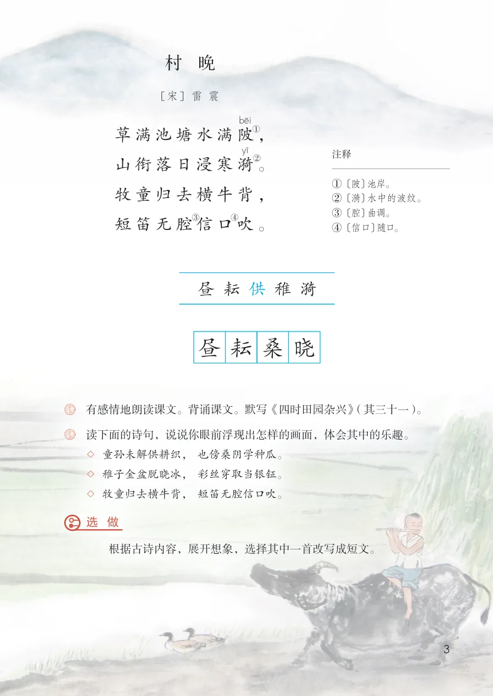

展开章节菜单
课本第 2 页
1 古诗三首
四时田园杂兴（其三十一）
昼出耘田夜绩麻，
村庄儿女各当家。
童孙未解供耕织，
也傍桑阴学种瓜。
注释
①〔耘田〕在田间除草。
②〔绩麻〕把麻搓成线。
③〔解〕理解，懂得。
④〔供〕从事。
⑤〔傍〕靠近。
⑥〔阴〕树荫。
②〔绩麻〕把麻搓成线。
③〔解〕理解，懂得。
④〔供〕从事。
⑤〔傍〕靠近。
⑥〔阴〕树荫。
稚子弄冰
稚子金盆脱晓冰，
彩丝穿取当银钲。
敲成玉磬穿林响，
忽作玻璃碎地声。
注释
①〔稚子〕幼小的孩子。
②〔金盆〕一般指铜盆。
③〔钲〕一种金属打击乐器。
④〔磬〕一种打击乐器，形状像曲尺。
⑤〔玻璃〕古代常指一种玉石。
②〔金盆〕一般指铜盆。
③〔钲〕一种金属打击乐器。
④〔磬〕一种打击乐器，形状像曲尺。
⑤〔玻璃〕古代常指一种玉石。
查看教材原页（保留全部图片、注音与原始排版）

课本第 3 页
村晚
草满池塘水满陂，
山衔落日浸寒漪。
牧童归去横牛背，
短笛无腔信口吹。
注释
①〔陂〕池岸。
②〔漪〕水中的波纹。
③〔腔〕曲调。
④〔信口〕随口。
②〔漪〕水中的波纹。
③〔腔〕曲调。
④〔信口〕随口。
字词积累
认读：昼、耘、供、稚、漪
书写：昼、耘、桑、晓
书写：昼、耘、桑、晓
练习与思考
有感情地朗读课文。背诵课文。默写《四时田园杂兴》（其三十一）。
读下面的诗句，说说你眼前浮现出怎样的画面，体会其中的乐趣。
◇ 童孙未解供耕织，也傍桑阴学种瓜。
◇ 稚子金盆脱晓冰，彩丝穿取当银钲。
◇ 牧童归去横牛背，短笛无腔信口吹。
选做：根据古诗内容，展开想象，选择其中一首改写成短文。
读下面的诗句，说说你眼前浮现出怎样的画面，体会其中的乐趣。
◇ 童孙未解供耕织，也傍桑阴学种瓜。
◇ 稚子金盆脱晓冰，彩丝穿取当银钲。
◇ 牧童归去横牛背，短笛无腔信口吹。
选做：根据古诗内容，展开想象，选择其中一首改写成短文。
查看教材原页（保留全部图片、注音与原始排版）
